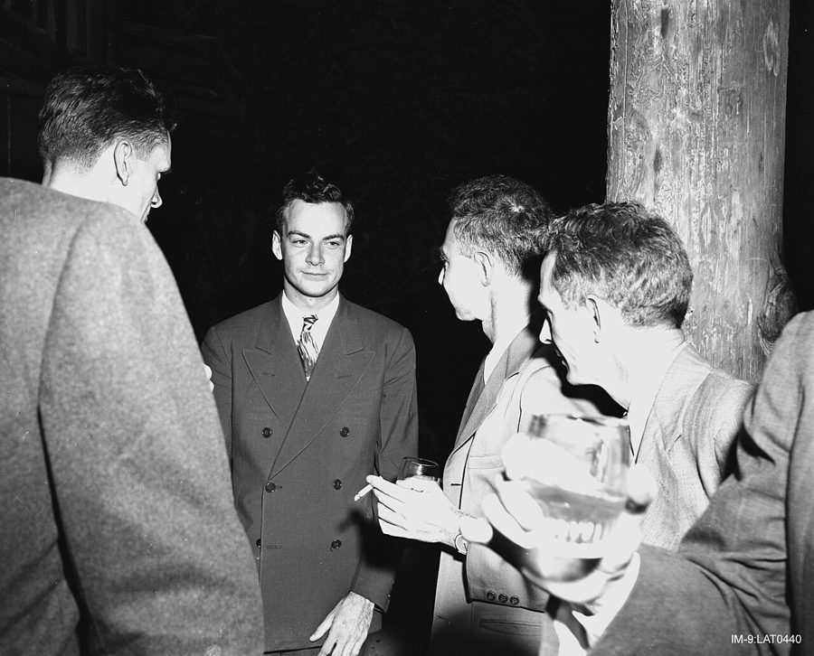
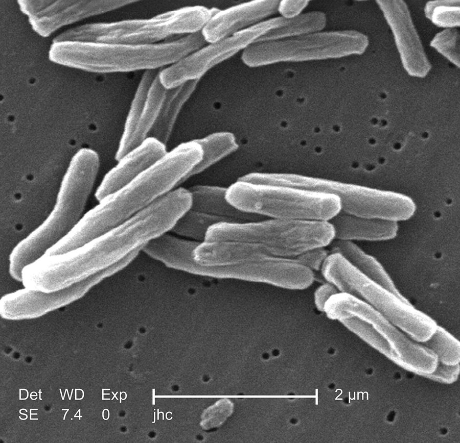

这一章在做什么
很短的一章，九成是费曼自己的话。作者只写了开头四段，交代他问过的最后一个问题：你是怎样一个人，做科学家怎样影响了你。第 5 段起到结尾全是斜体，是费曼的录音原话。
口语实录，句子会断、会重复、会说到一半拐弯。别逐句抠语法，先看下面这张图，知道他每一段在答什么。
费曼的回答，一段一步
这问题我听不懂 第 5 段
我是科学家，想知道真相 第 6 段
讲个故事：Arlene 第 7–8 段
快乐的时候别分析 第 9 段
她死了，我不怨谁 第 10–11 段
我已经都有过了 第 12 段
他嘴上说不回答这种问题，实际上答了，而且答得很私人
本站示意图。小标题是本站概括的，不是书里的话。
背景：作者默认你知道的事
这一章没有新人物出场，但费曼讲的事发生在四十年前。知道那时的情况，才听得出他话里的分量。
Arlene 和洛斯阿拉莫斯

曼哈顿计划期间的费曼（中间正对镜头者），在洛斯阿拉莫斯的一次聚会上，摄于 1943 到 1946 年之间。他妻子生病、去世就在这几年。
作者不详，公有领域，维基共享资源 费曼的第一任妻子，两人少年相识。别的传记多写作 Arline，这本书写 Arlene。费曼在洛斯阿拉莫斯参加原子弹研制时，她住在一百多公里外阿尔伯克基的疗养院里，1945 年 6 月去世，在第一次核试验之前一个月。
按费曼在这一章里自己说的岁数
13 岁 认识
19 岁 订婚
26 岁 结婚
这时已知她有 TB
几年后 她病逝
1945 年
63 岁上下 说这番话
1981 年前后
三十多年
从认识到她去世，十多年；他说的 grew up together 不是夸张
本站示意图。岁数照书里费曼的原话。通行的传记记载两人 1942 年结婚，那年他 24 岁，和书里的 26 岁有出入；口述几十年前的事，记岔了不奇怪。
TB：1940 年代的肺结核

结核分枝杆菌，扫描电子显微镜照片。第 11 段他说没法对「一些细菌」生气，说的就是它。
Janice Carr / CDC，公有领域，维基共享资源 TB 是 tuberculosis 的缩写，结核病。细菌引起，靠病人咳出的飞沫传染。当时没有特效药，治疗就是住进疗养院静养。第一种有效的药链霉素 1943 年才发现，对 Arlene 来说太晚了。
美国科罗拉多州一家结核病疗养院，病人躺在露台上晒太阳、呼吸新鲜空气。那时的「治疗」大致如此。不是 Arlene 住的那一家。
作者不详，公有领域，维基共享资源
所以朋友的劝告有两层：她活不长；他会被传染。第 10 段说，后一层才是他们真正怕的。
「寻找自我」、心理分析，和他的那条规矩
第 5 段引的 I have to find out who I am ，是 1960、70 年代美国年轻人里流行的说法：去旅行、去做心理咨询，为的是「找到真正的自己」。费曼一向瞧不上心理学那一套，上一章他就说过不给别人做心理分析，这一章说也不给自己做。
作者在第 4 段因此把这个回答称作一份特别的礼物：他本可以不答。
他自己的办法是第 9 段的一条规矩：
现在快乐吗？
不快乐
快乐
想：为什么？ think about it
别想 don’t. Why spoil it?
理由多半很可笑，想明白了就不快乐了
这时候分析自己才有用
本站示意图，画的是第 9 段的 My rule 。他先用「笑话一分析就不好笑」做铺垫。
拉车的马，和被拉的车
一辆两轮马车（cart）。前面两根长杆是套马用的。马在前，车在后。
DeFacto，2016，CC BY-SA 4.0，维基共享资源
英语有句习语 put the cart before the horse ：把车放到马前面，意思是把先后、因果弄反了。费曼在第 6 段化用它，说的不是「弄反了」，而是「分不清」：怀疑精神和做科学，在他身上是一回事，说不出哪个拉着哪个。
习语的字面：马拉车
费曼的意思：分不清
马
车
往前
原因，在前
结果，在后
cart before the horse = 因果倒置
怀疑精神
做科学
所以爱科学？
所以多疑？
which is the cart and which is the horse
本站示意图。
口语实录怎么读
斜体段落是照录音整理的，不是写出来的文章。说话的人会先说主语再重复一遍，会把要说明的东西甩到句尾，会省掉后半句。下面三处最容易把人绊住，右边是整理成书面语的样子。
他嘴上说的
写成书面语
… what that means, to understand yourself …
… what it means to understand yourself …
第 5 段。先说 that，再补出 that 指什么。
My friends, they told me, don’t marry her
My friends told me not to marry her.
第 10 段。主语说了两遍，后面直接学朋友的原话。
you’d just spoil it to know it
If you knew why, you would spoil it.
第 9 段。to know it 相当于一个 if 从句。
本站示意图。右边的句子是本站改写的，书里没有。
词与短语
词条按在书里出现的顺序排。斜体小字是它所在的那句话里的几个词，方便你在纸质书上找到。
put a question to
… QUESTIONS I had put to Feynman, …
向（某人）提出问题
put 是「提出」。章首几个词在书里是大写的。
stick with me
… one that always stuck with me …
一直留在我心里
stick – stuck。不是「跟我粘在一起」。
character
… a scientist influenced your character? …
性格，为人
不是「字符」，也不是「角色」。
Given …
… Given his impatience with all questions …
考虑到，鉴于
句首的 Given 是介词，不是「被给予」。
questions psychological
… with all questions psychological, I considered …
一切心理方面的问题
形容词放到名词后面，是故意写得文绉绉，带一点打趣。正常语序是 psychological questions。
A notice to me that …
… A notice to me that whatever …
一个给我的提醒：……
这句没有动词，是上一句 a special gift 的补充说明。notice 是名词。
attach importance to
… importance I might attach to success, …
把……看得很重
attach 是「附加」。monumental = 纪念碑那么大的，极大的。whatever … I might …：不管我把成功看得多重。
what that means, to …
… even know what that means, to …
那是什么意思，就是……这件事
这是口语。先说 that，再用 to understand … 补出 that 指什么。书面形式是 what it means to understand yourself。
find out who I am
… have to find out who I …
弄清「我是谁」，寻找自我
费曼在学别人的腔调，所以加了引号。见上面背景一节。
an awful lot
… learned an awful lot about myself …
非常多
awful 这里只表示程度，没有「糟糕」的意思。口语。
how I am put together
… I know how I am put …
我这个人是怎么组装起来的
put together = 组装。指身体的构造。费曼确实在加州理工的生物实验室里做过一阵研究。
operate
… about how I operate mechanically. But …
运转
不是「做手术」。他把自己说成一台机器：我有一套「我怎么运转」的理论。半开玩笑。
scientific stuff
… So scientific stuff affects every part …
科学这些东西
stuff 是口语里的万能词：「那些东西」。下一句 And affects … 没有主语，是口语，接着上一句说。
which is the cart and which is the horse
… which is the cart and which …
哪个是因，哪个是果
化用习语 put the cart before the horse。见上面的图。
an integrated person
… Because I’m an integrated person and …
一个整体的人，各部分拆不开
integrated = 合为一体的。以 Because 开头单独成句是口语，它在解释上一句。
Those things are impossible
… Those things are impossible. But I …
这种事是分不清的
这是口语，话没说全。意思是 Those things are impossible to tell apart，不是说怀疑和科学「不可能存在」。
look into
… That is why I look into things. …
探究，查个明白
不是「往里看」。
what is going on
… find out what is going on. …
到底是怎么回事
go on = 发生。这句 To see and to find out … 也没有主语，接上一句。
go together
… We went together for many years, …
谈恋爱，交往
老派的说法，现在多说 go out 或 date。不是「一起去」。
impart
… changed her by imparting to her …
传授，传给
impart A to B。这里把 to her 提前了，因为 A 很长。
one has to
… that one has to be irrational …
人有时候得……
one 泛指任何人，比 you 正式。irrational 是「不按理性来」，下一句他马上补充：不等于蠢。
situations, you should think about
… situations, you should think about, and …
有些情形是该用脑子分析的
这是口语，边想边说，所以逗号多。书面形式是 there are situations you should think about, and others you shouldn’t。
psychoanalyze
… not going to psychoanalyze myself. Sometimes …
做精神分析
上一章他对作者说过同一句话，那次宾语是 the guy。
after all
… might realize that, after all, it …
其实，说到底
插入语。仔细一想，其实并不好笑。
Why spoil it?
… don’t. Why spoil it? You’re probably …
何必把它毁了？
Why + 动词原形：何必……。前面的 don’t 后面省了 think about it。it 指快乐。
ridiculous
… happy for some ridiculous reason and …
可笑的，荒唐的
spoil it to know it
… just spoil it to know it. …
知道了反而把它毁了
这是口语。to know it 相当于 if you knew it。两个 it 不同：前一个是快乐，后一个是快乐的原因。
die of TB
… then she died of TB. I …
死于肺结核
die of + 病。TB 两个字母分开读。
My friends, they told me
… My friends, they told me, don’t …
我那些朋友，他们跟我说
这是口语，主语说了两遍。后面的 don’t marry her 是直接学朋友的话，没有引号。
didn’t have to … anymore
… have to marry her anymore. I …
用不着再……了
朋友的意思：订婚是个承诺，但她得了这种病，这个承诺可以不算数了。费曼下一句反驳：我本来就不是在履行义务。
out of a sense of duty
… her out of a sense of …
出于责任感
out of + 名词 = 出于。
catch it
… was that I’d catch it, but …
被传染上
catch + 病 = 染上，如 catch a cold。it 指 TB。germs 是病菌。
say,
… on my attitude, say, to death. …
比方说
两边有逗号的 say 是插入语，不是「说」。这句开头的 So for instance 也是口语的起头。
get mad
… I didn’t get mad when Arlene …
生气，发火
美式口语里 mad = angry，不是「疯」。mad at + 人。
Who was there to be mad at?
… Who was there to be mad …
有谁可以让我去恨呢？
反问句，意思是没有谁。there 不是「那里」，是 there be 句型。
remorse
… And I had no remorse because …
悔恨，自责
前一句的 resentment 是怨恨别人，remorse 是怨自己。两样他都没有。
could have done
… was nothing I could have done …
（当时）本来能做的
nothing I could have done = 我当时怎么做都没用。
a theory about that that …
… a theory about that that I …
关于那件事的一套看法，这套看法……
两个 that 连着。前一个指上一句的「死后去哪」，后一个引出从句。does come 的 does 是强调：确实来自。
consistent
… view about myself that is consistent. …
前后一致，不自相矛盾
程序员熟悉的那个意思。他信科学，所以对自己的生死也用同一套看法，不另找安慰。
how long I have to live
… know how long I have to …
我还能活多久
不是 have to（必须）。结构是 have + 多长时间 + to live。
a matter of when
… It’s just a matter of when. …
只是早晚的问题
a matter of … = ……的问题。前面的 sooner or later 是「迟早」。
have it all
… So I have had it all. …
什么都有了
习语：人生想要的全都得到。have had 是完成时：我已经全都有过了。
值得停下来的句子
The excitement is not in the fact that you’ve created something, but that you’ve found something beautiful that’s always been there.
— 第 6 段，费曼。本站译：让人兴奋的不是你造出了什么，而是你找到了一样一直就在那里的美的东西。
结构是 not in the fact that A, but that B ，第二个 that 前面省了 in the fact。句尾的 that’s 是 that has：一直就在那里。
这是费曼对「发现」的定义：科学家不是发明者，是找到的人。它也回答了作者上一章的问题：让人心动的，是看到本来就在那里的东西。
After Arlene, the rest of my life didn’t have to be so good, you see, because I had already had it all.
— 第 12 段，费曼。本站译：有过 Arlene 之后，我余下的人生就不必非得那么好了，你明白吧，因为我已经什么都有过了。
didn’t have to be 是「不必是」，不是「没有是」：他没说后半生过得不好，是说好不好都无所谓了。you see 是口语里的「你懂吧」。had already had 前一个 had 是助动词，后一个是 have it all 的 have。
这句是全章的落点，也是他对作者那个问题的回答：成功不是最要紧的。
检查一下理解
先在心里答，再点开。答错的那题，回书里把对应段落再读一遍。
1. 费曼说他学生物之后 “know how I am put together”。他是说他很了解自己吗？
不是作者问的那种了解。他说的是身体怎么构造、怎么运转，是机械层面的。紧接着一句就是：但这不叫在个人层面上了解自己。他是在说，这个问题他连意思都抓不住。
2. 第 6 段，费曼认为是怀疑精神让他爱上科学，还是科学让他多疑？
他说分不清。他是一个「整体」，这两样拆不开，所以说不出哪个是车哪个是马。Those things are impossible 是口语，意思是这种事没法分辨。他能确定的只有一句：我想知道什么是真的。
3. 第 7 段 “I’ll tell you a story” 的 you，和第 9 段 “when you laugh at a joke” 的 you，是同一个人吗？
不是。第 7 段的 you 是坐在对面的作者：我给你讲个故事。第 9 段的 you 是泛指，相当于「人」：人听了笑话会笑，人不快乐的时候该想想。他在讲一条对谁都适用的规矩，开头就说了 My rule is 。口语里这两种 you 混着用，要靠上下文分。
4. 朋友们劝他别娶 Arlene，嘴上的理由和心里的理由各是什么？
嘴上的理由：她得了结核病，你用不着再守婚约了。这是把结婚当成一种义务。心里的理由：怕他被传染。费曼两条都答了：他结婚不是出于义务，是因为爱她；传染确实危险，但他们很小心，他没染上。
5. Arlene 去世时他「没有生气」。这是说他不难过吗？
不是。mad 是愤怒，不是悲伤。他说的是没有可以恨的对象：他不信神，没法怨神；细菌也没法恨。所以他没有怨恨，不想报复，也不自责，因为当时什么都做不了。这是他举的例子，说明科学怎样影响了他对死亡的态度。
6. “Now I’ve just been to the hospital” 之后那几句，他是在害怕吗？
不是。他在把同一套态度用到自己身上：不知道还能活多久，但人人都会死，只是早晚。他不担心死后的事。然后话又回到 Arlene：他已经真正快乐过，所以余下的日子怎样都可以。